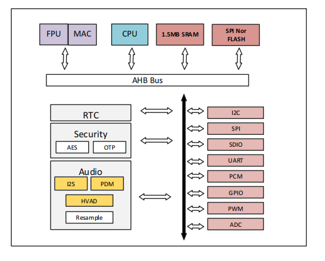
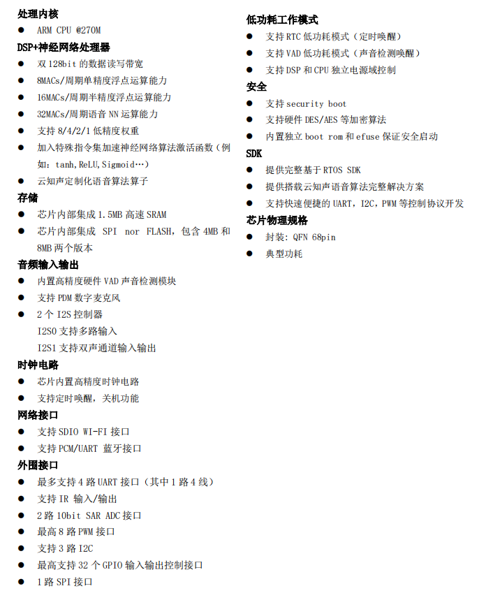

蜂鸟
简介
US52X 系列是云知声最新一代专门为离在线远场语音交互场景设计的高性能，高集成度，低成本的智能语音芯片，可广泛且快速应用于智能家居，智能家电，86 盒，灯具等产品。
该芯片采用 DSP+NPU+CPU 异步架构，前端信号处理 DSP，性能是 HiFi4 的两倍提供更好的降噪，增强，BF 等功能，高效神经网络处理器提供更快速和准确语音识别。支持 100 条本地指令离线识别，支持 RTOS 轻量级系统，并具有丰富的外围接口。蜂鸟系列芯片将搭载云知声自有专门为该芯片深度优化后的前端语音处理以及离在线语音识别等算法，为客户提供完整解决方案。
功能框图

主要特点
